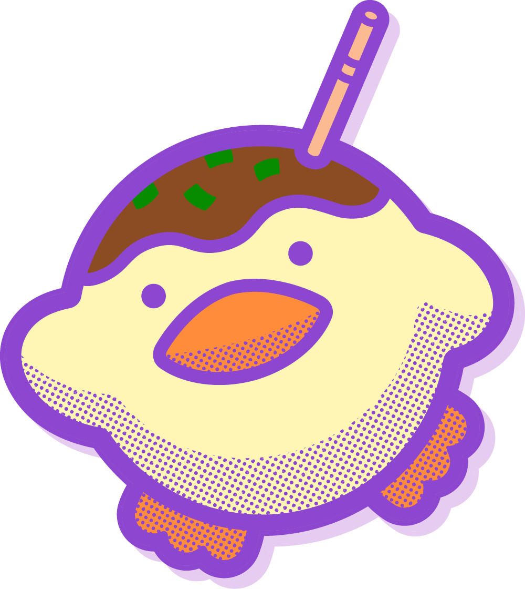
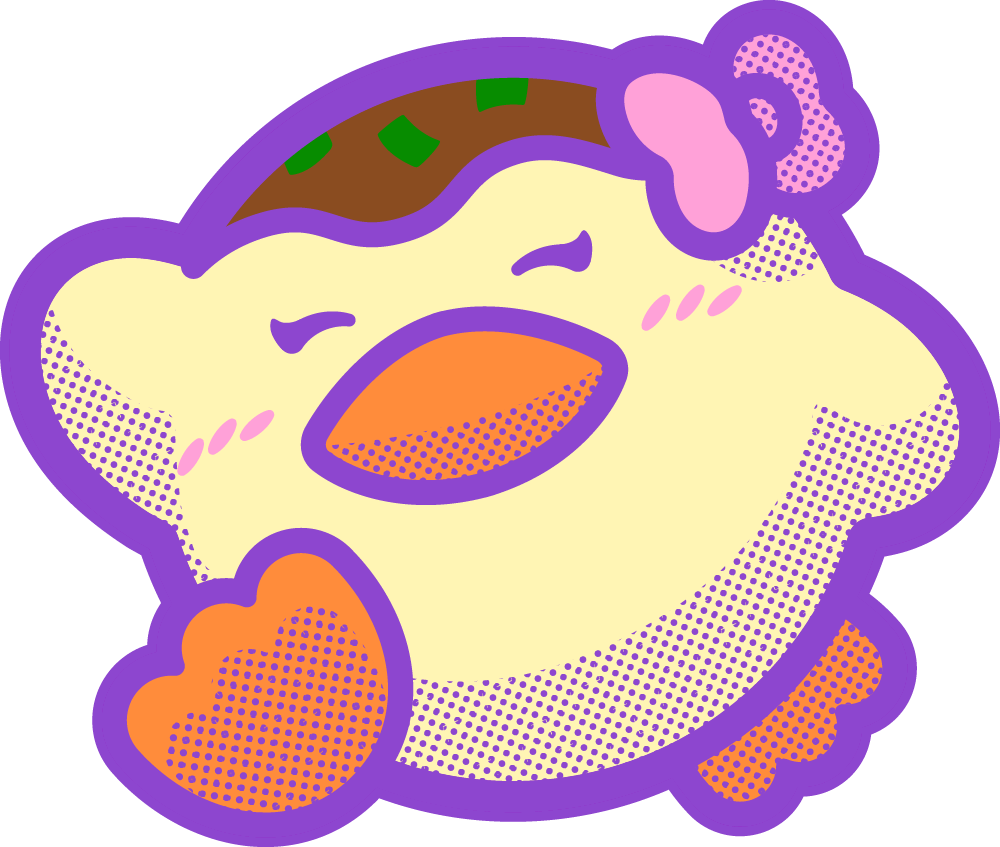
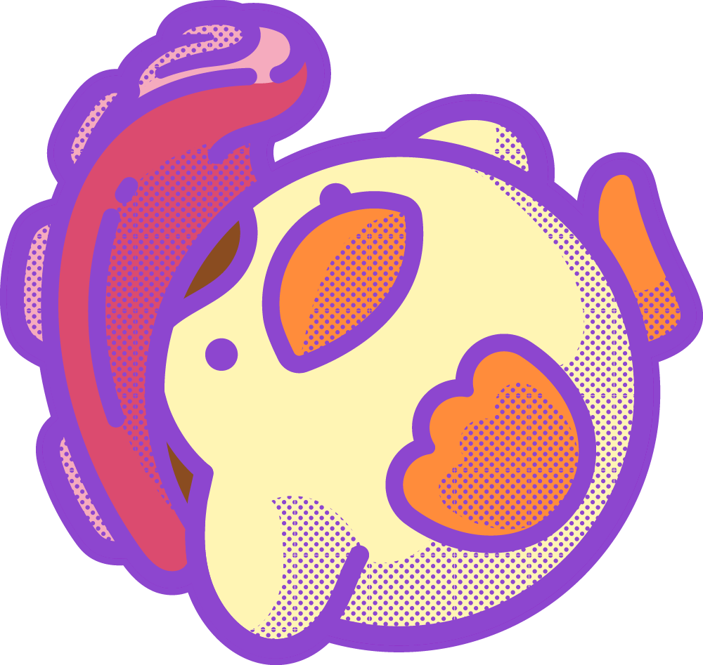

つま吉
つまきち
頭のたこ焼きと、斜めにささったつまようじが目印。タコペンの初代からのメインキャラクターです。
CHARACTERS
つま吉と、個性豊かななかまたち。



WE ARE TAKOPEN
「タコペン」は、つま吉やその仲間たちをまとめた呼び名です。
頭のかざりも、見た目も、それぞれ。OsakaPNGと一緒に「楽しいを共有する」なかまたちを紹介します。
つまきち
頭のたこ焼きと、斜めにささったつまようじが目印。タコペンの初代からのメインキャラクターです。
リボンのかざりが目印の、タコペンのなかま。
タコの足を思わせる頭のかざりが目印の、タコペンのなかま。